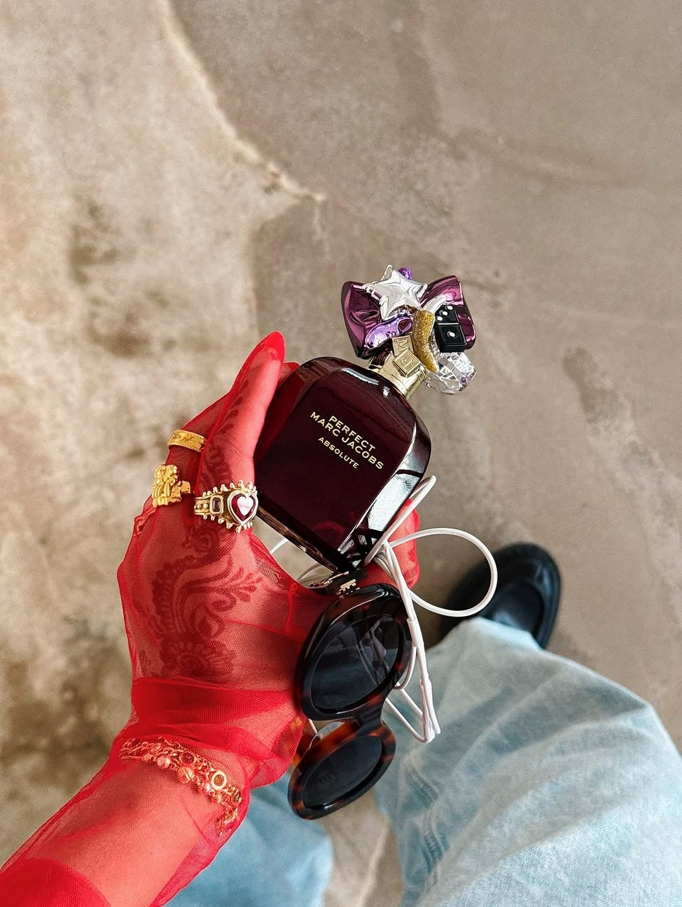
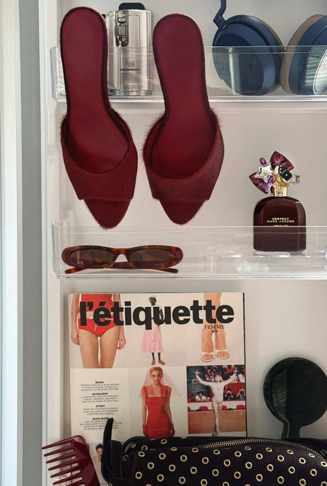
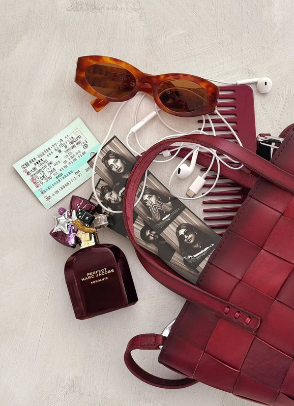

Marc Jacobs Fragrances
Creator-led campaigns for launches & evergreen
At Qulture, I own daily publishing and community for Marc Jacobs Fragrances — driving 30%+ engagement growth across Instagram, TikTok, Facebook, and YouTube.
What I did
- Run editorial calendars end-to-end, aligning influencer partnerships, PR moments, and campaign launches
- Schedule and optimize content via Sprinklr and Meta Business Suite
- Develop creator briefs, talent rollout decks, and ambassador guidelines; support shoot planning through post-production reviews
- Briefed creators on native storytelling formats for the Daisy Wild Eau So Extra launch — in-my-bag moments, flatlays, day-in-my-life
Highlights
- 30%+ engagement growth across always-on and campaign content
- Mother's Day reels and creator videos plus influencer reposts to close out the month
- Weekly and monthly performance reports with metrics and optimization recs for brand stakeholders

